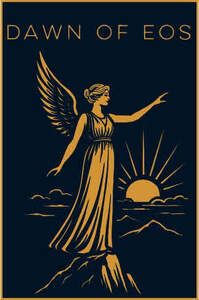

Trade Mark Journal No.2025/037 12 September 2025
UK00004256093 28 August 2025 (6,16,18,19,20,21,24,25,27,35,40)

- Class 6
- Containers of metal [storage, transport]; nameplates of metal; identity plates of metal; prize cups of common metal; tombstone plaques of metal; metal tumblers; metal plaques.
- Class 16
- Bookmarks; bookmarkers; calendars; cardboard; cards; charts; engravings; greeting cards; note books; pads [stationery]; photo-engravings; photographs [printed]; pictures; postcards; posters; .
- Class 18
- Bags; harnesses for animals; collars for animals; boxes of leather; clothing for pets; covers for animals; leather leashes; luggage tags; baggage tags; vegan leather.
- Class 19
- Grave slabs, not of metal; tomb slabs, not of metal; memorial plaques, not of metal; plywood; slate; stone; tombstone plaques, not of metal; plaques for houses & signs not of metal; slate coasters for household; slate portraits engraving.
- Class 20
- Boxes of wood or plastic; chopping blocks; picture frames; containers, not of metal [storage, transport]; house numbers; nameplates not of metal; jewellery organizer displays; labels of plastic; pet cushions; beehives; crucifixes of wood, wax, plaster or plastic; cushions; cushions for lining pet crates; decorations of plastic for foodstuffs; funerary urns; furniture; keyboards for hanging keys; mobiles [decoration]; nesting boxes; placards of wood or plastics; sections of wood for beehives; signboards of wood or plastics; stakes, not of metal, for plants or trees; .
- Class 21
- Beer mugs; beverage urns, non-electric; bird baths; bottles; bowls; bread boards; ceramics for household purposes; coin banks; commemorative statuary cups of porcelain, ceramic, earthenware, terra-cotta or glass; containers for household or kitchen use; cookie jars; cutting boards for the kitchen; dishes; drinking bottles for sports; drinking glasses; earthenware; crockery; flasks; hip flasks; jugs; pitchers; mats, not of paper or textile, for beer glasses; menu card holders; mugs; pet feeding bowls; piggy banks; place mats, not of paper or textile; plate glass [raw material]; porcelain ware; signboards of porcelain or glass; table plates; tablemats, not of paper or textile; .
- Class 24
- Blankets for household pets; cloth; cotton fabrics; covers for cushions; pillowcases; towels of textile; tea towels; dish towels.
- Class 25
- Aprons [clothing]; bandanas; boxer shorts; caps being headwear; clothing; collars; headwear; jerseys; knickers; panties; ready made clothing; scarfs; t-shirts; socks; sports jerseys; underpants; .
- Class 27
- Bath mats; door mats; floormats of rubber.
- Class 35
- Online retail services connected with the sale of our customised wooden items, printed designs, printed photographs, clothing & accessories, tote bags, home décor items, stone & metal items, pet accessories & related items; Mail order retail services connected with the sale of our customised wooden items, printed designs, printed photographs, clothing & accessories, tote bags, home décor items, stone & metal items, pet accessories & related items; Advertising our services for the promotion of customised wooden items, printed designs, printed photographs, clothing & accessories, tote bags, home décor items, stone & metal items, pet accessories & related items; Presentation of our goods on communication media, for retail purposes; provision of commercial information and advice for consumers in the choice of products.
- Class 40
- Custom manufacturing of goods to the order and specification of others; cloth dyeing; engraving; pattern printing; photographic printing; printing; textile dyeing; woodworking.
Dawn Of Eos Ltd